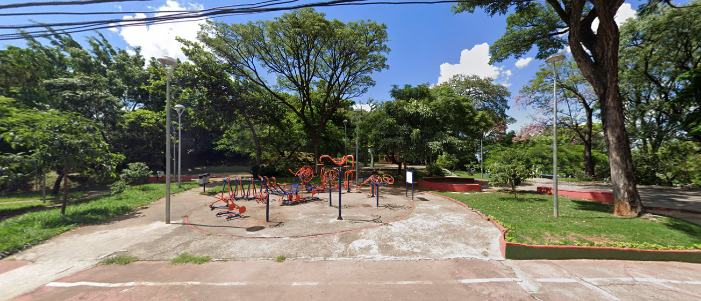
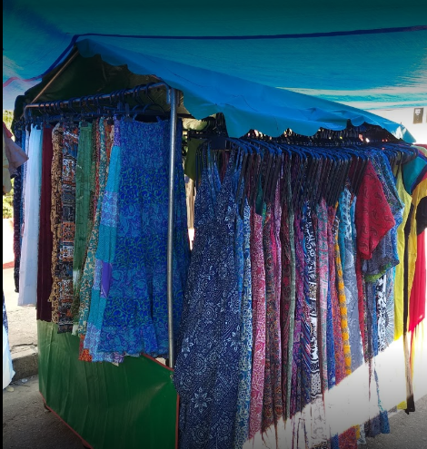
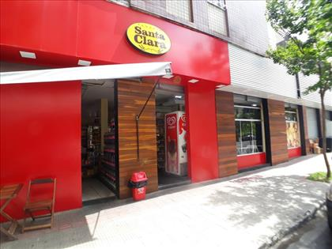

A Praça Dom Bosco é uma praça muito conhecida no bairro grajaú. Nela as pessoas pode se exercitar, jogar um baralho, passear com seu cachorro, jogar pokemon go com os amigos e além de poder jogar uma boa partida de peteca!
Praça Dom Bosco

Feirinha da Av. Silva Lobo
A feirinha da Av. Silva Lobo, é uma feira que acontece todos os sabádos, onde nela encontramos á venda: artesanato, roupas, comidas, brinquedos e muito mais! Além disso, possuímos mini shows de samba, rock e entre outros! No entanto, devido a pandemia a feirinha permanece proibida, mas, de acordo com o prefeito de Belo Horizonte, Alexandre Kalil, ele estuda a reabertura das feiras logo em breve!


Padaria Santa Clara
A padaria Santa Clara é a padaria mais conhecida do bairro grajaú, durante seu funcionamento, ela teve algumas concorrências, mas nenhum cliente resistia aos incríveis pratos da padaria Santa Clara, como sushi, pizza, salgadinho e não podemos esquecer do famoso e delicioso pão quentinho de todas as manhãs não é mesmo?

Bar do Careca
O bar do careca é o bar mais famoso do bairro Grajaú, e está localizado na Av. Silva Lobo. Ele é o bar mais adorado pelos moradores do bairro grajaú, que elogiam sempre seus deliciosos petiscos, como por exemplo: espetinhos, churrasco e entre outros. Ele possui mesas e cadeiras ao redor do bar e sempre está lotado, devido a sua grande clientela. Entretanto, devido a pandemia, ele permanece aberto, mas, com um limite de pessoas no local.

Leia mais sobre a reabertura dos bares em BH